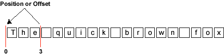
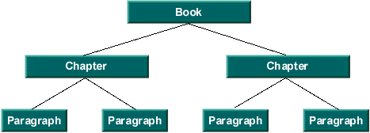
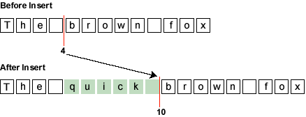

|
JavaTM 2 Platform Standard Ed. 6 |
|||||||||
| 上一个类 下一个类 | 框架 无框架 | |||||||||
| 摘要： 嵌套 | 字段 | 构造方法 | 方法 | 详细信息： 字段 | 构造方法 | 方法 | |||||||||
public interface Document
Document 是一个作为 swing 文本组件模型的文本容器。此接口的目标是为了满足不同的文档处理需要，从非常简单的文档（纯文本 textfield）到非常复杂的文档（例如，HTML 或 XML 文档）。
内容
在最简单的级别，文本可用一个线性的字符序列模型表示。为支持国际化，Swing 文本模型使用 unicode 字符。显示在文本组件中的字符序列一般称为组件的内容。
要引用序列中的位置，使用的是两个字符之间的坐标。如下图所示，文本文档中位置可称为一个位置或一个偏移量。位置是从零开始的。

此例中，如前图所示，如果文档的内容为序列 "The quick brown fox" ，"The" 之前的位置为 0，位于 "The" 之后、它后面的空白之前的位置为 3。序列 "The" 中的整个字符序列称为一个范围。
下列方法提供对组成内容的字符数据的访问。
结构
只将文本表示为一般的内容并不常见。更多的情况下，文本都通常具有与其关联的某种结构。具体构造成哪种结构取决于特定的 Document 实现。它可以简单到没有结构（即简单的文本字段），也可以是类似下面的图。

结构单位（即树的节点）由 Element 接口引用。每个 Element 都可用一组属性标记。这些属性（名称/值对）由 AttributeSet 接口定义。
下面的方法提供对文档结构的访问。
可变
所有的文档都需要能够添加和移除简单的文本。通常，通过键盘或鼠标动作添加和移除文本。插入和移除对文档结构有何影响完全取决于文档的实现。
下列方法与文档内容的变化相关：
通知
Document 的改变必须传送给相关的观察者。更改通知遵守为 JavaBeans 指定的事件模型大纲。在 JavaBeans 事件模型中，一旦指派了一个事件通知，必须在事件源发生进一步的更改之前通知所有的侦听器。此外，无法保证传送的顺序。
通知以两个独立的事件提供，DocumentEvent 和 UndoableEditEvent。如果通过 Document 的 api 对其进行改变，将对所有注册的 DocumentListeners 发送一个 DocumentEvent。如果 Document 实现支持撤消/重复功能，UndoableEditEvent 将发送到所有注册的 UndoableEditListener 上。如果对可撤消的编辑进行撤消，应从 Document 触发 DocumentEvent 以指示又进行了更改。但是这种情况下不应生成任何 UndoableEditEvent，因为编辑实际上是更改的源，而不是通过其 api 对 Document 进行的改变。
上图中假设左面显示的组件改变了蓝色矩形表示的文本对象。文档通过对两个组件视图指派 DocumentEvent 进行响应，并向侦听逻辑发送 UndoableEditEvent，以保留历史缓冲区。
现在假定右面显示的组件改变相同的文档。同样，文档对两个组件视图指派 DocumentEvent 并对保留历史缓冲区的侦听逻辑发送 UndoableEditEvent。
如果历史缓冲区因此回滚（即撤消上一个 UndoableEdit），将对两个视图发送 DocumentEvent，导致二者都反映出对文档的撤消改动（即移除右面的组件的改动）。如果历史缓冲区再次回滚另一个更改，将对两个视图发送另外的 DocumentEvent，导致它们反映出对文档的撤消改动，即移除左面的组件的改动。
与观察文档的改动相关的方法有：
属性
文档实现通常具有在运行时与之关联的某组属性。两个最常见的属性是 StreamDescriptionProperty 和 TitleProperty，前者可描述 Document 的来源，后者可用于命名 Document。与这些属性相关的方法有：
有关 Document 类的更多信息，请参阅 The Swing Connection 以及更有针对性的文章 The Element Interface。
DocumentEvent,
DocumentListener,
UndoableEditEvent,
UndoableEditListener,
Element,
Position,
AttributeSet| 字段摘要 | |
|---|---|
static String |
StreamDescriptionProperty
用于描述初始化文档的流的属性名。 |
static String |
TitleProperty
文档标题的属性名（如果有）。 |
| 方法摘要 | |
|---|---|
void |
addDocumentListener(DocumentListener listener)
注册给定的观察者以便开始接收文档发生更改的通知。 |
void |
addUndoableEditListener(UndoableEditListener listener)
注册给定的观察者以便开始接收文档发生不可撤消的编辑的通知。 |
Position |
createPosition(int offs)
此方法允许应用程序在字符内容序列中标记位置。 |
Element |
getDefaultRootElement()
返回视图赖以存在的根元素，除非提供了向元素结构指定视图的其他机制。 |
Position |
getEndPosition()
返回代表文档结束处的位置。 |
int |
getLength()
返回文档中当前内容的字符数。 |
Object |
getProperty(Object key)
获得与文档关联的属性。 |
Element[] |
getRootElements()
返回定义的所有根元素。 |
Position |
getStartPosition()
返回代表文档起始处的位置。 |
String |
getText(int offset,
int length)
获取文档中给定部分包含的文本。 |
void |
getText(int offset,
int length,
Segment txt)
获取文档中给定部分包含的文本。 |
void |
insertString(int offset,
String str,
AttributeSet a)
插入内容字符串。 |
void |
putProperty(Object key,
Object value)
将属性与文档关联。 |
void |
remove(int offs,
int len)
移除文档的部分内容。 |
void |
removeDocumentListener(DocumentListener listener)
将给定的观察者从通知列表中撤消注册，这样就不再接收改动更新。 |
void |
removeUndoableEditListener(UndoableEditListener listener)
将给定的观察者从通知列表中撤消注册，这样就不再接收更新。 |
void |
render(Runnable r)
如果模型支持异步更新，则允许在并发情况下安全呈现模型。 |
| 字段详细信息 |
|---|
static final String StreamDescriptionProperty
static final String TitleProperty
| 方法详细信息 |
|---|
int getLength()
void addDocumentListener(DocumentListener listener)
listener - 要注册的观察者removeDocumentListener(javax.swing.event.DocumentListener)void removeDocumentListener(DocumentListener listener)
listener - 要注册的观察者addDocumentListener(javax.swing.event.DocumentListener)void addUndoableEditListener(UndoableEditListener listener)
listener - 要注册的观察者UndoableEditEventvoid removeUndoableEditListener(UndoableEditListener listener)
listener - 要注册的观察者UndoableEditEventObject getProperty(Object key)
key - 非 null 属性键
putProperty(Object, Object)
void putProperty(Object key,
Object value)
StreamDescriptionProperty 和 TitleProperty。也可以定义其他属性，如 author。
key - 非 null 属性键value - 属性值getProperty(Object)
void remove(int offs,
int len)
throws BadLocationException
为确保并发情况下的合理行为，事件在改动发生之后指派。这意味着在指派移除通知之前，文档已经更新并且由 createPosition 创建的任何标记已更改。对于移除的情况，移除范围的结束折叠至范围的开始，移除范围内的任何标记都折叠至范围的开始。

如果移除导致 Document 结构更改，生成的 DocumentEvent 中还将包含更改所涉及的插入和移除 Element 的细节。移除对结构造成的更改则具体取决于 Document 的实现。
如果 Document 支持撤消/重复，还将生成 UndoableEditEvent。
offs - 起始位置的偏移量，该值 >= 0len - 要移除的字符数，该值 >= 0
BadLocationException - 移除范围的有些部分不是文档的有效部分。异常中的位置为遇到的第一个损坏位置。DocumentEvent,
DocumentListener,
UndoableEditEvent,
UndoableEditListener
void insertString(int offset,
String str,
AttributeSet a)
throws BadLocationException

如果插入导致 Document 结构更改，有关更改涉及的插入和移除的 Element 的细节将包含在生成的 DocumentEvent 中。作为对插入的响应，由 Document 的实现决定结构应如何更改。
如果 Document 支持撤消/重复，还将生成 UndoableEditEvent。
offset - 要插入内容的偏移量，该值 >= 0。跟踪给定的位置或其后位置的更改的所有位置都将移动。str - 要插入的字符串a - 要与插入的内容关联的属性。如果没有属性，它可能为 null。
BadLocationException - 给定插入位置不是文档中的有效位置DocumentEvent,
DocumentListener,
UndoableEditEvent,
UndoableEditListener
String getText(int offset,
int length)
throws BadLocationException
offset - 文档中代表所需文本起始位置的偏移量，该值 >= 0length - 需要的字符串的长度，该值 >= 0
BadLocationException - 给定范围的某些部分不是文档中的有效部分。异常中的位置为遇到的第一个损坏位置。
void getText(int offset,
int length,
Segment txt)
throws BadLocationException
如果 txt 参数的 partialReturn 属性为 false，Segment 中返回的数据将是请求的整个长度，根据数据存储的方式可能是副本，也可能不是。如果 partialReturn 属性为 true，则只返回不需要创建副本即能返回的文本量。使用部分返回在需要扫描大部分文档的情况下具有更好的效果。下面是使用部分返回访问整个文档的示例：
int nleft = doc.getDocumentLength();
Segment text = new Segment();
int offs = 0;
text.setPartialReturn(true);
while (nleft > 0) {
doc.getText(offs, nleft, text);
// do someting with text
nleft -= text.count;
offs += text.count;
}
offset - 文档中代表所需文本起始位置的偏移量，该值 >= 0length - 需要的字符串的长度，该值 >= 0txt - 要在其中返回文本的 Segment 对象
BadLocationException - 给定范围的某些部分不是文档中的有效部分。异常中的位置为遇到的第一个损坏位置。Position getStartPosition()
Position getEndPosition()
Position createPosition(int offs)
throws BadLocationException
offs - 文档起始处的偏移量，该值 >= 0
BadLocationException - 如果给定的位置不代表关联文档中的有效位置Element[] getRootElements()
通常只有一个文档结构，但是此接口支持在文本数据上构建任意数的结构投影。文档可以有多个根元素以支持多文档结构。一些示例如下：
Element getDefaultRootElement()
void render(Runnable r)
r - 用于呈现模型的 Runnable
|
JavaTM 2 Platform Standard Ed. 6 |
|||||||||
| 上一个类 下一个类 | 框架 无框架 | |||||||||
| 摘要： 嵌套 | 字段 | 构造方法 | 方法 | 详细信息： 字段 | 构造方法 | 方法 | |||||||||
版权所有 2008 Sun Microsystems, Inc. 保留所有权利。请遵守GNU General Public License, version 2 only。